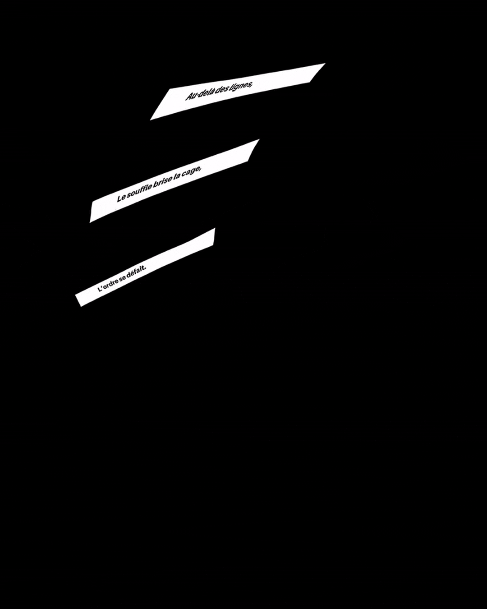
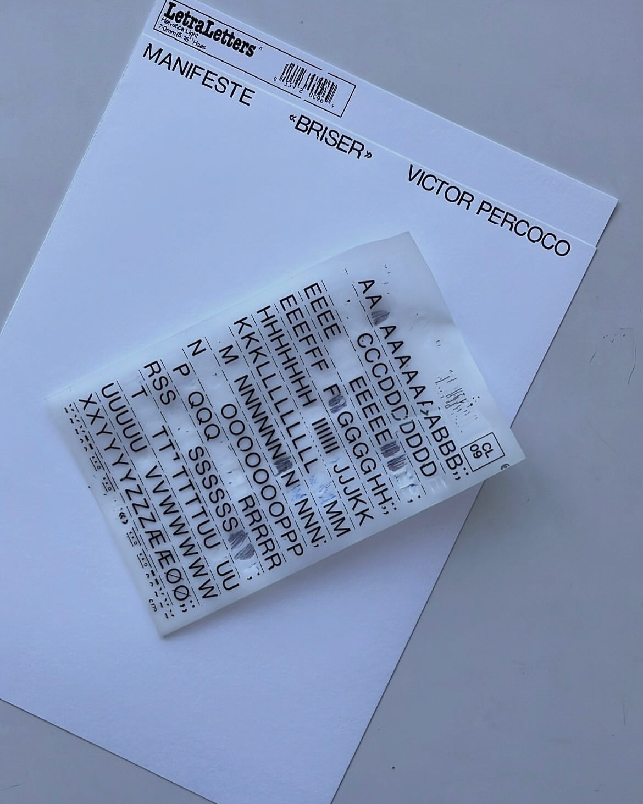
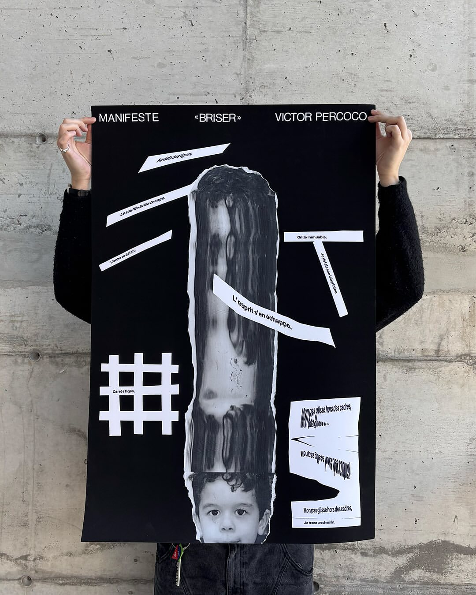

What is there within me that I can discover, use, and express, in order to contribute to a more just and equitable world?
This project is intended as a reminder of the importance of deconstructing imposed norms and letting go of what no longer serves us, in order to rebuild a path that belongs to us. It champions the idea of preserving the child within as a driving force for freedom and expression, fostering authentic growth, liberated from the rigid frameworks of society and rooted in nonconformity.

Formulated as a haiku using the Amiamie font by @bye.byebinary, the text was printed, cut, digitized, and distorted, each manipulation visually translating the meaning of its respective section. The title, placed at the top of the poster, was created using Letraset.
These graphic choices are inspired by early 20th-century Russian Futurism, because just as the avant-garde sought to draw upon history to extract the essence of art, this manifesto invites a return to childhood as the primary source of creation and emancipation. This project aims to remind us of the importance of deconstructing imposed norms and discarding what no longer serves us, in order to rebuild a path that is truly our own.
It champions the idea of preserving the child within us as a driving force for freedom and expression, fostering authentic growth, liberated from the rigid frameworks of society and rooted in nonconformity.


Credits
The manifesto was elaborated and designed in the context of the Design and Social Change course (DGX2022), during the Winter 2025 semester at UQAM's School of Design under the supervision of Cath Laporte.